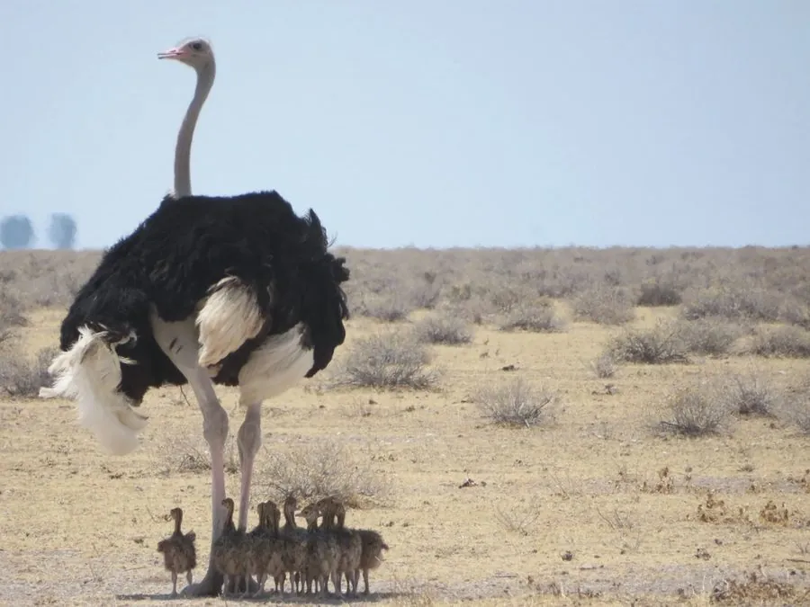

鸟类 · 动物界
非洲鸵鸟 Struthio camelus

现存体型最大的鸟类，不会飞却能跑出 70 km/h 的速度，非洲稀树草原上的双趾巨鸟，雄鸟羽色黑白分明。
- 分类
- 门脊索动物门纲鸟纲目鸵形目科鸵鸟科属鸵鸟属
- 栖息环境
- 非洲撒哈拉以南的稀树草原、半荒漠与干旱灌丛，也见于废弃农田和草原
- 地理分布
- 非洲撒哈拉以南广大地区，阿拉伯半岛有重新引入种群，中国有人工养殖种群
- 保护级别
- IUCN 无危（LC）；非中国原产物种，中国境内为人工养殖
物种志
非洲鸵鸟体高 2.1–2.8 m，体重 63–145 kg，是现存最大的鸟类。雄鸟的体羽呈黑色，翅膀和尾部的羽毛洁白，雌鸟则通体灰褐色。它的头小、眼大，颈部裸露，腿粗壮有力，脚上只有两个脚趾，其中内侧的大趾承受全身重量，非常适合在硬地上高速奔跑。
非洲鸵鸟分布于撒哈拉以南非洲的稀树草原、半荒漠和干旱灌丛，也常出现在废弃农田中。它们是杂食性鸟类，吃植物茎叶、种子和果实，也吞食昆虫、蜥蜴和小型动物。鸵鸟实行一雄多雌制，几只雌鸟共用一个地面巢穴，每窝可产 15–60 枚卵，由雄鸟夜间、雌鸟白天轮流孵化，孵化期 42–46 天。它冲刺时速可达 70 km/h，持续奔跑时也有 50 km/h，强壮的腿还能踢伤掠食者。
形态与习性
- 食性植物茎叶、种子、果实，也吃昆虫、蜥蜴和小型动物
- 体高2.1–2.8 m
- 体重63–145 kg
- 奔跑冲刺时速可达 70 km/h，持续奔跑约 50 km/h
- 繁殖共用巢穴，每窝 15–60 枚卵，孵化 42–46 天
- 鸟卵单枚卵重约 1.2–1.5 kg，是现存最大的鸟卵
- 寿命野外约 30–40 年，养殖可超过 50 年
趣味知识
- 鸵鸟只有两个脚趾，是现存鸟类中趾数最少的，拇趾已完全退化。
- 鸵鸟的眼球直径约 5 cm，比它的脑子还大。
- 遇到危险时鸵鸟不会把头埋进沙子，而是伏低身体躲避或快速逃跑。
- 一枚鸵鸟蛋约等于 24 枚鸡蛋，蛋壳坚固到可以承受人的体重。